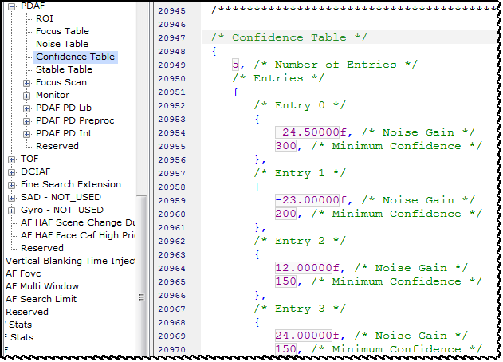

The confidence table is used to define a minimum confidence threshold relative to the
sensor gain. A high confidence means that the PD in the ROI has a small variance and a
higher edge intensity.
The defaults for the table are as follows:

- The first min_conf is fully applied when noise gain is ≤
first noise gain.
- The last min_conf is fully applied when noise gain is ≥
last noise gain.
- The min_conf between the first and last entries is linearly
interpolated according to where the noise gain lies between the gain of the first and
last entries.
- The ROI PD confidence value is only considered if it is over the minimum confidence
threshold.